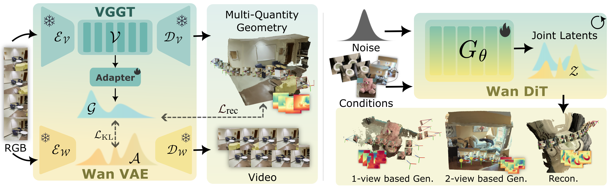
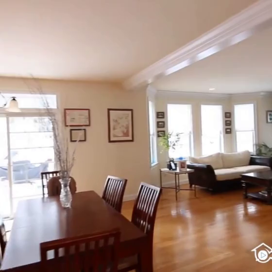
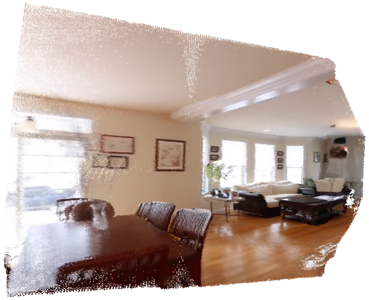
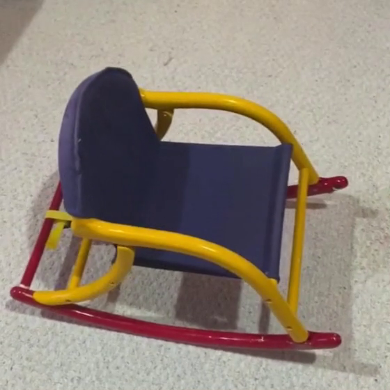
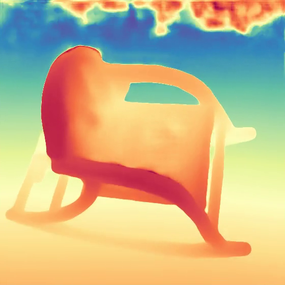
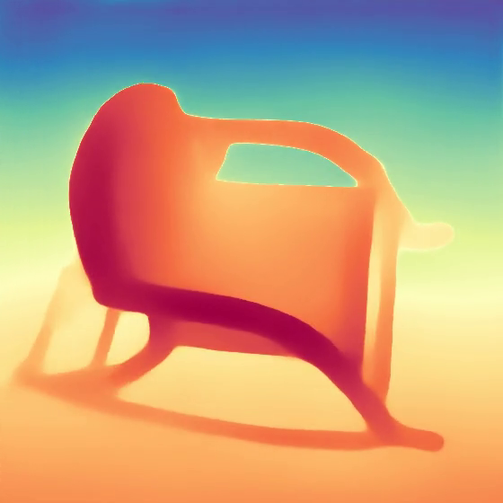
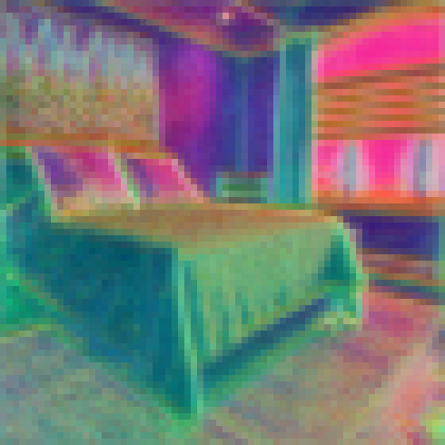
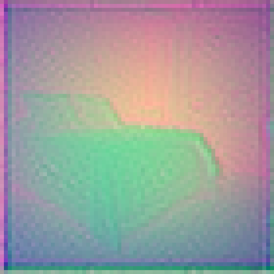
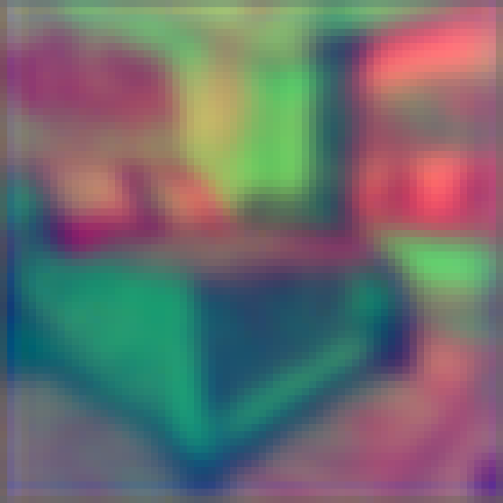

一句话:Gen3R 不去学习一个全新的 3D VAE,而是把已经很强的重建基础模型 VGGT 重铸成一个「非对称几何 VAE」——用一个轻量因果卷积适配器把 VGGT 的中间 token 压进视频扩散模型(Wan2.1-1.3B)的潜空间,并用 KL 损失把几何潜分布对齐到 RGB 潜分布;随后两个模态的潜变量沿宽度拼接,由同一个 DiT 联合去噪,一次前向同时产出 RGB 视频、逐帧深度、相机内外参、全局点云四种资产。
infer.py:232,286,289 硬编码)问题:给定 1 张图、首尾 2 帧、或一整段视频,生成/重建出几何一致、相机可控的 3D 场景资产。方法:重建模型的 token 流形本身就是「自带多视角几何结构的紧凑潜空间」,与其费劲训一个 3D VAE,不如把 VGGT 的 token 适配进视频扩散的潜空间、用分布对齐损失让两者同构,再联合扩散。结果:外观生成上 1-view 设定在 Re10K/DL3DV 取得最优或次优 PSNR;几何生成 CD 全面压制 Aether / WVD;并且在纯重建(全帧输入)任务上反超 VGGT 自身的 CD(TartanAir 1.5101 vs 1.5957)——生成先验反过来修正了重建模型的漂浮点。

LucidDreamer 式逐帧扩画 + 优化。具体失败模式:几何结构差、优化成本高(论文 §1: "poor geometric structure or high optimization cost")。
WVD / 后续工作学一个压缩 3D 场景的 VAE 再做潜空间扩散。具体失败模式:大规模 3D GT 稀缺,监督只有 2D 信号,几何与生成质量双输(§1: "suboptimal geometry and constrained generation quality")。
拿现成图像 VAE 去编码 VGGT 的点云(WVD VAE-only)。具体失败模式:本文 Tab.3 实测——RGB VAE 编解码点云后 Co3Dv2 CD 从 VGGT 的 0.9632 恶化到 1.2080,TartanAir 从 1.5957 恶化到 2.7867。点云分布与图像分布差异过大,压缩即失真。
输入:条件图像序列 $\mathcal{I}_{cond}$(1 张 / 首尾 2 张 / 全部 $F$ 张,缺失位置补零)、二值掩码 $\mathcal{M}$、可选文本 $\mathbf{y}$、可选逐帧相机条件 $\mathcal{T}_{cond}$(Plücker 光线图)。输出:RGB 视频 $F\times H\times W\times 3$、逐帧深度、相机外参 $[F,3,4]$ 与内参 $[F,3,3]$、全局点云(由深度按相机反投影)。官方推理默认 $F=49$、$H=W=560$。
| 符号 | 含义 | 形状 / 出处 |
|---|---|---|
| $\mathcal{V}$ | VGGT 中间 token(4 层 patch token + 相机 token 广播,共 $L=5$ 组) | $[N, L, h_v, w_v, C]$, $h_v=w_v=40$, $C=2048$;论文 §6.2 |
| $\mathcal{E}_{adp}, \mathcal{D}_{adp}$ | 几何适配器编码器/解码器(因果 3D 卷积,类 Wan causal VAE) | 输入/输出 10240 维,隐藏 [512,256,128,128];geo_adapter/config.json |
| $\mathcal{G}$ | 几何潜变量 | $[n, h, w, c]$, $h=w=70$, $c=16$ |
| $\mathcal{A}$ | Wan VAE 外观潜变量 | 同 $\mathcal{G}$ 的时空分辨率,16 通道 |
| $\mathcal{Z}$ | 联合潜变量(沿宽度拼接) | $[B, 16, f, 70, 140]$;pipeline_gen3r.py:674 |
| $G_\theta$ | Wan2.1 DiT(本文微调) | dim 1536 / 30 层 / 12 头 / FFN 8960 / patch(1,2,2) / in 36 通道;transformer/config.json |
| $\mathcal{D}_{pt}, \mathcal{D}_{dep}, \mathcal{D}_{cam}$ | VGGT 预训练 DPT 头:点图 / 深度 / 相机 | 冻结复用;中间层取第 4/11/17/23 层 |
| $F=49$, $f=13$ | 视频帧数 / 潜变量帧数(时序压缩 ×4) | infer.py:286;pipeline_gen3r.py:392 |
| 步骤 | 算子 | 输入形状 | 输出形状 | 出处 |
|---|---|---|---|---|
| 1 | VGGT aggregator(冻结) | $[N,3,560,560]$ | 4 层 token 各 $[N,1600,2048]$ + 相机 token | vggt/models/aggregator.py |
| 2 | 相机 token 广播 + 拼接 | 相机 token $[N,2048]$ | $\mathcal{V}\in[N,5,40,40,2048]$($L{=}5$: 4 层 patch + 1 相机) | 论文 §6.2 |
| 3 | reshape 通道 | $[N,5,40,40,2048]$ | $[N,40,40,10240]$ | 论文 §6.2 |
| 4 | nearest-exact 重采样 | $40\times40$ | $70\times70$ | 论文 §6.2 |
| 5 | 2D 卷积投影 | 10240 通道 | 1024 通道 | 论文 §6.2 |
| 6 | 因果 3D 卷积 Encoder3d(dim_mult [4,2,1,1],hidden 128×mult=[512,256,128,128],2×ResBlock/级) | $[N,1024,13,70,70]$ | $\mu,\log\sigma^2$: $z_{dim}\times2=32$ 通道 | geometry_adapter.py:278-336, 511-538 |
| 7 | 重参数化 | 32 通道 | $\mathcal{G}$: $[B,16,13,70,70]$ | 同上 |
| 8 | Decoder3d(镜像,输出 10240 通道) | $\mathcal{G}$ | $\hat{\mathcal{V}}$ $[N,5,40,40,2048]$ | geometry_adapter.py:389-503 |
| 9 | token 还原 + 冻结 VGGT DPT 头 | $\hat{\mathcal{V}}$ | 点图/深度/相机(与原版 VGGT 解码完全同构) | common_utils.py:116-131 |
其中 $L=5$(4 层 patch token + 相机 token 广播到 $40\times40$ 空间网格,$h_v=w_v=40$,$C=2048$,$L\times C=10240$)。适配器与 Wan VAE 共享时序压缩 ×4、空间压缩 ×8(geo_adapter/config.json),因此几何潜与外观潜同形,可逐像素对齐拼接。
各项权重出自 train_geo_adapter_pl.py:297-341:token 重建 SmoothL1($\beta$=0.15)、相机位姿 L1 权重 10、深度 2、点云 1,另有图像/相机 token 的余弦相似度损失(各权重 1);KL 项把几何潜的后验分布 $q(\mathcal{G})$ 拉向 Wan VAE 对同一批帧编码出的外观潜后验 $p_{Wan}(\mathcal{A})$,权重用 calculate_adaptive_weight 按数量级自适应(取 $10^{\lfloor\log_{10}(L_{rec}/L_{KL})\rfloor}$)再乘 0.1。消融(Tab.4)证明没有这项 KL,PSNR 掉 4.2 dB。
监督信号:该模块有完整监督(重建 + 相似度 + KL),训练数据为带相机标注的多视角视频(无需 3D GT,深度/点云监督来自冻结 VGGT 自身的预测——即教师自蒸馏)。
$\mathcal{A}$ 与 $\mathcal{G}$ 沿宽度拼成 $[B,16,13,70,140]$;条件潜 $\mathcal{Z}_{cond}=[\mathcal{A}_{cond}\oplus\mathcal{M}_a;\mathcal{G}_{cond}\oplus\mathcal{M}_g]$(几何侧条件潜与掩码恒置零——即几何不直接吃条件,只通过外观侧间接约束),最终 DiT 输入通道 $16 + 20 = 36$(transformer/config.json: in_dim 36)。Plücker 相机图经 4× 时序打包成 $[B,24,13,H,W]$ 后同样在宽度上翻倍走 control adapter(pipeline_gen3r.py:680-688)。
| 改动点 | 内容 | 出处 |
|---|---|---|
| 输入通道 | in_channels 36(16 噪声潜 + 20 条件潜),out 16 | transformer/config.json |
| 位置编码 | 宽度左右两半共享同一组 RoPE——$(i,j)$ 位置的外观 token 与几何 token 拿到相同旋转相位,强制跨模态逐位对应 | 论文 §6.2 |
| 主干 | Wan2.1-Fun-V1.1-1.3B-Control-Camera(图-相机条件版),dim 1536、30 层、12 头、FFN 8960、patch (1,2,2) | train_dit.sh:11 + config |
| 全量微调 | --trainable_modules ".",bf16 + deepspeed + 梯度检查点 | train_dit.sh |
Flow Matching 目标(train_dit.py:1588-1613):预测目标为 $\epsilon - x$;损失为带阈值掩码的 MSE($|diff|>50$ 的元素置零,防离群爆梯度)乘 SD3 式 $\sigma$ 加权。条件组合每步等概率($1/3$)取 1-view / 2-view(首尾帧)/ 全序列;文本以 20% 概率丢弃(CFG);相机条件以 50% 概率丢弃(train_dit.py:283-284)。推理:FlowMatchEulerDiscrete 调度、shift 2.0、默认 50 步、CFG 5~6(scheduler_config.json + infer.py:290)。
监督信号:联合潜空间上的 Flow Matching 损失(不区分外观/几何半区,无单独几何权重)。
| 输入 | 算子 | 输出 | 出处 |
|---|---|---|---|
| 左半潜 $[B,16,13,70,70]$ | Wan VAE decoder(冻结) | RGB 视频 $[B,49,560,560,3]$ | pipeline_gen3r.py:454 |
| 右半潜 $[B,16,13,70,70]$ | $\mathcal{D}_{adp}$ | VGGT token $\hat{\mathcal{V}}$ $[B,10240,F,40,40]$ | pipeline_gen3r.py:440 |
| $\hat{\mathcal{V}}$ | convert_to_token_list(相机 token 取空间均值重复 5 份) | 4 组 $[B,F,1605,2048]$ token 列表 | common_utils.py:116-131 |
| token 列表 | 冻结 VGGT camera_head | 外参 $[B,F,3,4]$、内参 $[B,F,3,3]$ | pipeline_gen3r.py:445-446 |
| token 列表 + 占位帧 | 冻结 point_head / depth_head(DPT) | 点图 $[B,F,560,560,3]$、深度 $[B,F,560,560,1]$(+置信度,被丢弃) | pipeline_gen3r.py:447-448 |
| 深度 + 内外参 | unproject_depth_map_to_point_map | 全局点云 $[F,560,560,3]$ + 点掩码 | pipeline_gen3r.py:449-452 |
infer.py:107-116 存 pcds.ply),与论文 §3.3 一致;point_head 的直接点图输出在 results['point_maps'] 里也有,但不落盘。两条路径来自同一批 token,一致性未在论文中量化——【待核实】两者差异幅度。| 模式 | CLI | 输入 | 条件注入方式 | 输出 |
|---|---|---|---|---|
| 1-view 生成 | --task 1view | 单张图 + 文本 + 相机轨迹(内置 zoom/arc/translate 或自定义 json) | control_index=[0],其余 48 帧掩码 0 | 49 帧 RGB + 全套几何 |
| 2-view 生成 | --task 2view | 首尾帧 + 文本 + 相机 | control_index=[0,-1] | 同上 |
| 全序列重建 | --task allview | 整段视频/帧目录(截取前 49 帧) | 全部帧掩码 1;相机条件强制置零(infer.py:272-273) | 同上,但几何即重建结果 |
allview 模式就是峰哥要的能力——视频进,RGB + 深度 + 相机内外参 + 全局点云出。但注意三点:① 它仍是扩散采样(50 步)而非确定性编码,生成先验参与几何结果(这是它比 VGGT 更干净的原因,也意味着输出不完全等于输入);② 帧数硬上限 49,长视频需自行窗口化(见 §15 改进 2);③ 相机位姿是模型自己生成的(allview 忽略输入相机),若下游需要与外部 SLAM/COLMAP 对齐,需自行做相似变换配准。scene_scale = 0.8 × median(depth),infer.py:252),再程序化生成 49 帧 c2w;extrinsics 4×4 + intrinsics 3×3,OpenCV 约定),或 free(无相机条件,轨迹由模型自由发挥)。相机条件以 Plücker 光线图 $[F,6,560,560]$ 注入(compute_rays),经时序 4× 打包成潜分辨率后走 control adapter;1-view/2-view 模式下也可完全不给(free)。
| 损失项 | 公式 / 形式 | 权重(真值) | 作用对象 | 出处 |
|---|---|---|---|---|
| token 重建(图像×4 + 相机) | SmoothL1($\beta$=0.15) | 1 / 1 | 适配器 | train_geo_adapter_pl.py:297-300 |
| 相机位姿回归 | L1(pose_enc) | 10 | 适配器 | train_geo_adapter_pl.py:318 |
| 深度回归 | compute_depth_loss(gamma 1, alpha 0.2) | 2 | 适配器 | train_geo_adapter_pl.py:319 |
| 点云回归 | compute_point_loss(同上) | 1 | 适配器 | train_geo_adapter_pl.py:320 |
| token 余弦相似度 | $1-\cos$(图像 + 相机两组) | 1 | 适配器 | train_geo_adapter_pl.py:325-327 |
| KL 分布对齐(本文核心) | $D_{KL}(q(\mathcal{G})\|p_{Wan}(\mathcal{A}))$ | $0.1\times$ 自适应数量级权重 | 适配器 | train_geo_adapter_pl.py:332-342 |
| Flow Matching | $\|v_\theta - (\epsilon - x)\|^2$,阈值 50 掩码 × SD3 $\sigma$ 加权 | 1(唯一项) | DiT | train_dit.py:1590-1613 |
| 项 | 内容 | 出处 |
|---|---|---|
| 仓库 | JaceyHuang/Gen3R,MIT;推理 infer.py(301 行)+ 训练 train_geo_adapter_pl.py(960 行)+ train_dit.py(1790 行),内嵌完整 VGGT 与 VideoX-Fun Wan2.1 实现 | git clone 实读 |
| 权重(HF JaceyH919/Gen3R,2026-01-13 更新) | transformer/(DiT)+ geo_adapter/ + wan_vae/ + vggt/(1B)+ text_encoder/(umt5-xxl,3 shards)+ clip_image_encoder/ + scheduler/ | HF API 文件清单 |
| 加载坑 | README 明确:from_pretrained("JaceyH919/Gen3R") 直拉会模块命名报错,必须 git lfs clone 到本地 ./checkpoints 再 from_pretrained | README §Setup |
| 环境 | Debian 12 + CUDA 12.4 + torch 2.5.1+cu124 + flash-attn 2.7.0 + open3d 0.18 + pytorch3d 0.7.8;官方开发卡为 H20 96G | requirements.txt / README |
| 超参 | 论文(§4.1) | 源码 / 配置真值 | 出处 |
|---|---|---|---|
| 适配器阶段 1 | 25 帧 @560²,15k 步,bs 2 × 累积 4,24×H20(总 192) | 脚本默认 bs 1 × 累积 8(单卡参考配置) | train_geo_adapter_pl.sh |
| 适配器阶段 2 | 49 帧,6k 步,bs 1 × 累积 8 | 一致 | 同上 |
| DiT 微调 | 49 帧 @560²,8k 步,bs 4,24×H20 | bs 4 × 累积 2,lr 1e-5 cosine(warmup 50),bf16,deepspeed,梯度检查点,stride-2 采帧 | train_dit.sh |
| 条件采样 | 三模式各 1/3;文本丢 20%;相机丢「一定概率」 | 相机丢弃率实测 0.5 | train_dit.py:283-284 |
| 推理 | 未写步数 | FlowMatchEuler shift=2.0,默认 50 步,CFG 默认 6(infer.py 实传 5),seed 42 | scheduler_config.json, pipeline_gen3r.py:564-566, infer.py:290 |
| 训练数据规模 | 10 个数据集、>300k 场景、每集约 90% 进训练;文本标注由 MLLM 生成 | 数据需自行整理成 nerfstudio 式目录(images + captions.txt + transforms.json),不提供整理好的数据 | 论文 §4.1 / README §0 |
| 产物 | 格式 | 细节 |
|---|---|---|
rgb.mp4 | 49 帧 560×560 | 生成/重建的 RGB(注意:不是输入帧原样回显,是扩散采样结果) |
pcds.ply | PLY 点云 | 深度反投影,open3d 体素降采样 0.005(--remove_far_points 时 0.003 + 深度 80 分位截断 + 离群过滤);原始点数上限 49×560×560 ≈ 1537 万,降采样前无置信度过滤 |
cameras.json | extrinsics [49,4,4] + intrinsics [49,3,3] | OpenCV 约定;VGGT 坐标系,尺度任意(非米制) |
| 深度图 | — | 默认不保存(infer.py:99-105 整段注释掉),需要时取消注释;深度与置信度在 sample.depth_maps / DPT head 第二返回值里 |
model_cpu_offload_seq(pipeline_gen3r.py:171)或自行分段加载——可行性【待核实】。infer.py:232 无条件截前 49 帧,长视频直接丢尾;pipeline_gen3r.py:392 的公式允许其他帧数,但训练从未见过 ≠49 的时序长度,【推测】外推质量无保证。infer.py:236-239),横构图视频左右内容直接裁掉——对宽画幅街拍/行车数据是硬伤。infer.py:213),深度精度受 bf16 限制;【推测】远距离薄结构可能受影响。dpt_head.py:157-159),pipeline 里 depth_maps, _ = ... 直接扔掉 conf(pipeline_gen3r.py:447-448),点云过滤只能靠体素/分位数规则。| 设定 | 方法 | Re10K PSNR↑ | SSIM↑ | LPIPS↓ | DL3DV PSNR↑ | SSIM↑ | LPIPS↓ |
|---|---|---|---|---|---|---|---|
| 1-view | LVSM | 18.97 | 0.7161 | 0.2992 | 15.61 | 0.5384 | 0.4434 |
| Gen3C | 20.26 | 0.7186 | 0.2302 | 16.21 | 0.5557 | 0.4575 | |
| Gen3R(本文) | 20.51 | 0.7388 | 0.2281 | 16.38 | 0.5821 | 0.4234 | |
| 2-view | DepthSplat | 26.67 | 0.8711 | 0.1742 | 16.83 | 0.6094 | 0.3971 |
| LVSM(插值最强) | 29.58 | 0.9197 | 0.1060 | 18.80 | 0.6404 | 0.3575 | |
| Gen3R(本文) | 27.05 | 0.8732 | 0.1352 | 18.59 | 0.6149 | 0.3416 |
| 设定 | 方法 | Co3Dv2 CD↓ | WildRGB-D CD↓ | TartanAir CD↓ |
|---|---|---|---|---|
| 1-view | Aether | 1.9498 | 0.3066 | 3.8457 |
| WVD | 1.6137 | 0.2635 | 3.7302 | |
| VGGT(纯重建参考) | 2.3561 | 0.3534 | 3.0487 | |
| Gen3R(本文) | 1.1047 | 0.1992 | 2.7809 | |
| 2-view | Aether | 1.5520 | 0.3038 | 3.1082 |
| WVD | 1.7081 | 0.2148 | 3.4531 | |
| VGGT | 1.2759 | 0.1463 | 2.0877 | |
| Gen3R(本文) | 0.9767 | 0.1426 | 1.9734 |
手算复核:1-view Co3Dv2 对 WVD −31.5%、WildRGB-D −24.4%、TartanAir 对 WVD −25.4%;2-view TartanAir 上 Gen3R(1.9734)反超 VGGT(2.0877)——生成补全了 VGGT 在少视角下缺失的区域(VGGT accuracy 好但 completeness 差)。


| 方法 | Co3Dv2 CD↓ | WildRGB-D CD↓ | TartanAir CD↓ |
|---|---|---|---|
| VGGT(原模型) | 0.9632 | 0.1165 | 1.5957 |
| WVD(VAE only,RGB VAE 压点云) | 1.2080 | 0.1526 | 2.7867 |
| Ours(VAE only,仅适配器压缩) | 0.9986 | 0.1165 | 1.6518 |
| Gen3R(完整,扩散生成) | 0.9625 | 0.1260 | 1.5101 |



| 方法 | 1-view Re10K AUC@30↑ | 1-view WildRGB-D | 2-view Re10K | 2-view WildRGB-D |
|---|---|---|---|---|
| Aether | 0.6398 | 0.5375 | 0.6220 | 0.5068 |
| WVD | 0.6727 | 0.6780 | 0.7249 | 0.7113 |
| Gen3R | 0.7443 | 0.8004 | 0.7732 | 0.8098 |
OOD(附录 Tab.8,LLFF / Mip-NeRF360 / ScanNet++):1-view 三数据集 PSNR 13.19 / 13.17 / 15.42,全面小胜 LVSM 与 Aether;2-view 下 LVSM 仍凭插值优势领先。结论一致:欠约束越强,Gen3R 越占优。
| 变体(1-view) | Re10K PSNR↑ | LPIPS↓ | Co3Dv2 CD↓ | WildRGB-D CD↓ | 相对完整版变化(手算) |
|---|---|---|---|---|---|
| 2-Stage(先生成视频,再 VGGT 重建) | 17.38 | 0.3412 | 1.6223 | 0.2330 | PSNR −3.13 dB(−15.3%),CD +46.9% |
| w/o $\mathcal{L}_{KL}$(无分布对齐) | 16.31 | 0.3941 | 1.9620 | 0.3280 | PSNR −4.20 dB(−20.5%),CD +77.6% |
| 完整 Gen3R | 20.51 | 0.2281 | 1.1047 | 0.1992 | — |



| 方法 | 年份 | 输入假设 | 场景表示 | 监督信号 | 训练数据 | 训练时长 | 推理耗时 | 显存 | 关键指标 | 开源 |
|---|---|---|---|---|---|---|---|---|---|---|
| Gen3R(本文) | 2026 | 1/2/49 帧 ± 相机 | RGB + 深度 + 位姿 + 点云(无 GS) | FM + 适配器重建/KL(无 3D GT) | 10 数据集 300k+ 场景 | 24×H20,8k+21k 步 | 50 步扩散,【待核实】 | 【待核实】 | Re10K 1-v 20.51 PSNR;CD 最优 | ✅ 全量(MIT) |
| WVD(复现) | 2025 | 单/少图 | RGB + 点云 | LDM 于点云 VAE 潜空间 | 同上规模 | — | — | — | Re10K 1-v 17.62;CD 1.6137 | ✗ 未开源(本文复现) |
| Aether | 2025 | 单/少图 | RGB + 深度 + 位姿 | 合成数据 3D 监督 | UE 合成数据 | — | — | — | Re10K 1-v 16.57 | ~ 部分 |
| Gen3C(库内) | 2025 | 单图 + 轨迹 | RGB + 单目深度 | 深度 warp + 修复 | — | — | — | — | Re10K 1-v 20.26(接近本文) | ✅ |
| Geometry Forcing | 2025 | 单/少图 | RGB 视频 | 扩散中间特征对齐全局几何模型 | — | — | — | — | Re10K 1-v 16.32(弱) | ✅ |
| LVSM | 2024 | 2+ 视图 | 像素对齐 3DGS | 渲染损失 | 多视角数据集 | — | 快(前馈) | — | Re10K 2-v 29.58(插值王) | ✅ |
| DepthSplat | 2024 | 2+ 视图(需成本体) | 像素对齐 3DGS | 渲染损失 | 多视角数据集 | — | 快(前馈) | — | Re10K 2-v 26.67;遮挡处有洞 | ✅ |
| FlashWorld(库内) | 2025 | 单图/文本 + 轨迹 | 像素对齐 3DGS(直接渲染资产) | 双模式 + DMD2 蒸馏 | 多视角 + 海量单图 OOD 共训 | — | 4 步 / 单卡 4~9s | 5B 模型 | WorldScore 均分第一;第三方 Re10K 20.18 | 推理开源,训练申请制 |
| VGGT(库内) | 2025 | 1~数百帧 | 点云 + 深度 + 位姿 | 3D 监督(冻结使用) | — | — | 秒级前馈 | ~24G 可跑 | 重建 CD 与本文互有胜负 | ✅ |
| 范式 | 代表方法 | 核心先验 | 局限 |
|---|---|---|---|
| SDS / 逐帧外扩优化 | DreamFusion、LucidDreamer | 2D 扩散先验 | 几何差、优化贵 |
| 多视角生成 + 重建后接 | MVDream→3DGS、本文 2-Stage 消融 | 多视角扩散 | 误差级联(本文 Tab.4 实证) |
| 几何中心 3D VAE + 潜空间扩散 | WVD、Aether | 从头学 3D 潜空间 | 3D GT 稀缺、VAE 失真 |
| 重建模型 token 即几何潜空间 | Gen3R(本文) | VGGT 流形 + 视频扩散先验,双空间 KL 对齐 | 无显式可渲染表示(无 GS);静态场景假设;49 帧/560² 上限 |
| 视频扩散直出 3DGS + 少步蒸馏 | FlashWorld、SHARP(库内) | 像素对齐高斯 + DMD2 | 几何无显式真值、质量受蒸馏限制 |
| 纯前馈重建(无生成) | VGGT、Pi3(库内) | 大规模 3D 监督 | 不能补全未观测区域 |
Gen3R 的 allview 模式就是"视频进、几何出":一段视频(≤49 帧) → pcds.ply(全局点云)+ cameras.json(49 组内外参)+ 逐帧深度(取消注释后)+ 重建 RGB。相比直接跑 VGGT/Pi3,它的增量价值是生成先验带来的几何去噪与缺失补全(Fig.5:VGGT 的漂浮点被清掉);代价是 50 步扩散的耗时与结果随机性(seed 固定可复现)。
pcds.ply 按 cameras.json 投影回某帧,与该帧 RGB 边缘对比——错位明显时路线 A 的颜色初始化会把错位烙进高斯。【待核实】错位幅度的实测数据(论文与仓库均无此项评估)。dpt_head.py:157-159),改两行代码即可在初始化时滤掉低置信高斯。| 项 | 评估 |
|---|---|
| 单卡 3090(24G)可行性 | 【待核实】权重 bf16 合计 ≈17~18GB(含 umt5-xxl 5.6B),pipeline 带 cpu offload 钩子(pipeline_gen3r.py:171);建议先按 offload 方案试跑,显存不足时把文本编码器常驻 CPU |
| 单场景耗时 | 【待核实】论文/仓库均未报告;50 步 × 31.9k token 的 1.3B DiT + VGGT 双解码,量级估计分钟级,离线资产生产可用、在线交互不可行 |
| 接入难度 | 低:单条 python infer.py --task allview --frame_path video.mp4;输出 PLY + JSON,无需格式转换即可进 3DGS 训练器 |
| 训练复现门槛 | 高:10 数据集需自行整理为 nerfstudio 式目录;官方配置 24×H20,单卡仅作参考(脚本已给单卡参数) |
问题:联合潜变量在宽度拼接后,decode_latents 直接 latents.chunk(2, dim=-1) 分两路独立解码(pipeline_gen3r.py:439, 454),扩散损失对两半一视同仁(train_dit.py:1612),全链路没有一条损失约束"第 i 个像素的颜色与深度必须自洽"。论文也从未评估 RGB-深度逐像素一致性。改进:① 加一条重投影一致性损失(用生成的 K/E/depth 把 RGB 帧 warp 到邻帧);② 或训练一个共享解码头。短期替代:桥接前做点云投影自检(§14.2)。
问题:infer.py:232 无条件截前 49 帧;infer.py:289 分辨率写死 560;没有任何跨窗口的位姿/点云缝合逻辑。改进:滑窗 + 重叠段相似变换配准(VGGT 系的 Pi3/CUT3R 已有成熟做法可借);分辨率侧可先超分输入或改 RoPE 插值,【待核实】未见官方讨论。
问题:convert_to_token_list 把相机 token 在空间维取均值再重复 5 份(common_utils.py:123),4 层 token 共享同一份均值相机信息;位置稍异的微调相机估计无从表达。改进:保留逐 patch 相机 token 或加相机专用的轻量 adapter 头;【推测】这是重建位姿 AUC 略输 VGGT(Tab.9)的可能原因之一。
问题:DPT 头原生返回 (pred, conf)(dpt_head.py:157-159),pipeline 两处 depth_maps, _ = ...、point_maps, _ = ... 直接丢弃(pipeline_gen3r.py:447-448),点云过滤只剩体素降采样与 80 分位截断(common_utils.py:134-150)。改进:导出 conf 并用于 GS 初始化过滤/加权监督,改动 <10 行。
问题:几何只在 Co3Dv2/WildRGB-D/TartanAir 评 CD,位姿只在 Re10K/WildRGB-D 评 AUC;没有任何指标回答"生成的深度和生成的 RGB 是不是同一个场景";动态场景完全缺席。改进:补 RGB→depth 渲染重投影误差指标;补动态数据集上的失败案例分析。
问题:推理 50 步全量 CFG(双流 → 每步 2×31.9k token)。改进:库内已有成熟路线可迁移——DMD2 少步蒸馏、FlashWorld 的跨模式蒸馏;【推测】压到 8 步内、单场景 10s 级是合理目标。
| 改进点 | 维度 | 优先级 | 代码/实验佐证 |
|---|---|---|---|
| RGB-几何逐像素对齐损失 | 方法层面 | 高 | pipeline_gen3r.py:439;训练无跨模态损失 |
| 长视频窗口化 + 位姿缝合 | 工程实用性 | 高 | infer.py:232 硬截断 |
| 相机 token 去均值化 | 方法层面 | 中 | common_utils.py:123;Tab.9 位姿略输 VGGT |
| 导出并使用置信度 | 工程实用性 | 中 | dpt_head.py:157-159 vs pipeline_gen3r.py:447-448 |
| RGB-深度一致性评估 | 数据与评估 | 中 | 论文无此指标 |
| 少步蒸馏 | 工程实用性 | 低 | 50 步默认值 |
个人认为最关键的三点:①(对齐损失)决定它能不能直接进 3DGS 管线;②(窗口化)决定它能不能处理真实拍摄的长素材;④(置信度导出)是性价比最高的即改即赚项——VGGT 系模型在弱纹理/遮挡处的 conf 已经很有区分度。
Gen3R 的本质贡献是一个视角转换:3D 生成的瓶颈不是"怎么设计 3D VAE",而是"承认重建基础模型的 token 流形已经是最好的几何潜空间"。把 VGGT 重铸为非对称几何 VAE + KL 对齐 + 宽度拼接联合扩散,三个组件都不复杂,但组合出的模型第一次让「生成 RGB」与「生成几何」在同一个去噪过程里互相校准——消融里 2-Stage 管线 −3.13 dB 的差距就是这个"校准"的价格。
对本库场景的意义:它是FlashWorld(要速度、要 3DGS、要秒级)与 VGGT(要确定性、要稠密帧)之间的第三极:要几何质量与缺失补全,能接受分钟级。在 vggt_human 语境下,它最合适的角色是静态背景的生成式重建器(配 SAM3 掩码剔人),输出的深度+位姿+点云经 §14.2 路线 A/B 桥接进 3DGS;动态人体区域不应交给它。
git clone --depth 1 逐文件实读(infer.py / pipeline_gen3r.py / geometry_adapter.py / train_dit.py / train_geo_adapter_pl.py / common_utils.py / dpt_head.py,文中 file:line 均可回查);HF 仓库文件清单与 transformer/config.json、geo_adapter/config.json、scheduler/scheduler_config.json(经 hf-mirror 拉取);arXiv abs 页(版本史与 comments)。相对变化百分比均按表格原始值手算复核(§11、§12)。标注 【推测】/【待核实】 处为无原文/源码直接佐证的推断。推理显存与耗时论文、README 均未给出,未编造数字。